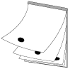

This section first looks at the basic idea behind flip-book type
animations, then discusses disk space requirements, and lists special
features of 3DO Animator that facilitate creating animations.
Flip-book type animations
The basic idea behind animation is that you paint on multiple pages
(called frames) and then flip through them. Making images that
differ slightly from frame to frame and playing them back in rapid
succession creates the illusion of motion.

Figure 1: Basic flip-book animation.
Disk space considerations
Animations use a lot of disk space because each frame is usually a
separate file. You should therefore choose the resolution and document
size wisely:
Use 256 colors when working with animations that you later want to
save in 3DO file format. Consider setting your Preferences to 8 bits per
pixel if you work with 3DO animations frequently.
Don't work with a larger page size than you need.
Overview of creating animations with 3DO Animator
There are several ways to create animations using 3DO Animator:
Use 3DO Animator to create a flip-book animation.
Load a QuickTime movie file and make changes as desired, then save the
file in 3DO file format.
Use the Build an Animation command in the File menu to create an
animation from a series of sequentially numbered PICT files. Make changes
as needed, then save in 3DO format.
Use the Quick Build 3DO Anim command in the 3DO Options menu to
automatically concatenate 3DO cels in a specified folder (see page ).
Special features for processing animations with 3DO Animator
3DO Animator offers several processing options that apply to all the
frames of an animation:
Move or resize a selection in all frames of an animation by choosing
Apply Selection to All Frames (Selection menu).
Replace colors in all frames of an animation by choosing All Frames in
the Replace Colors dialog available from the Colors menu.
Trace part of a digitized movie and use the drawing as a separate
document by using the light table (Animation menu).